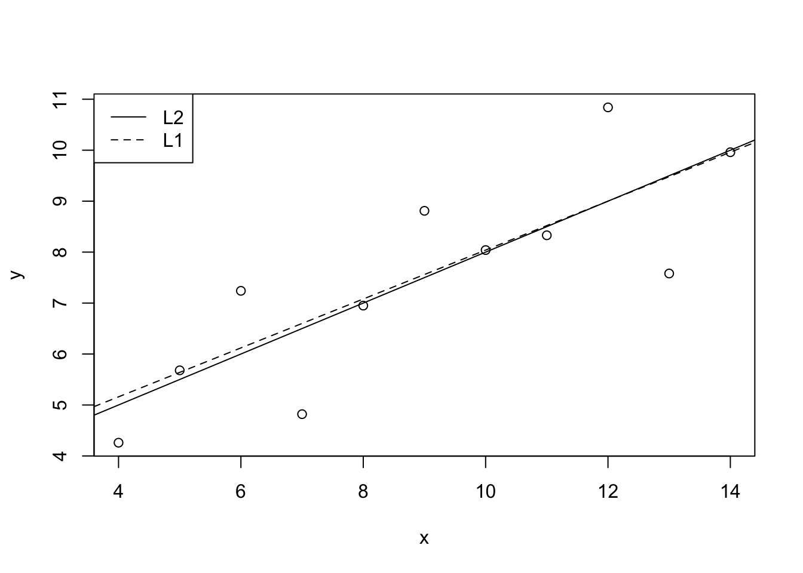
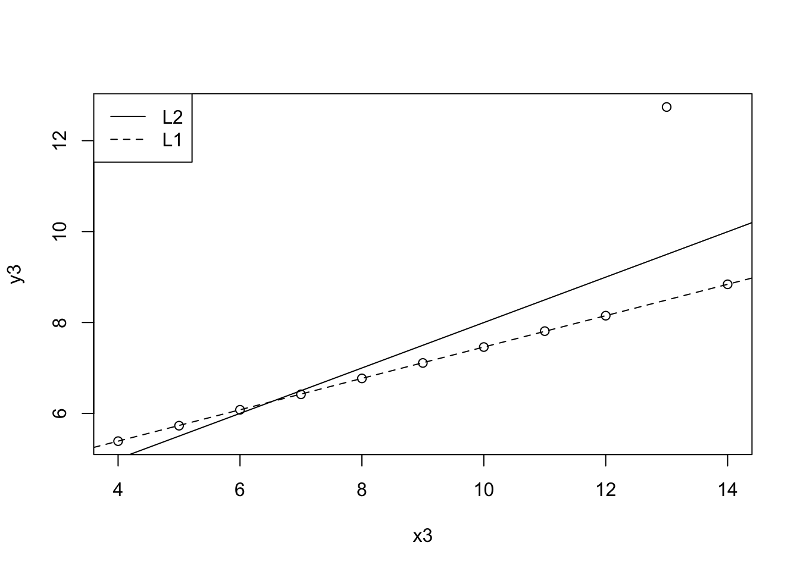

Chapter 3 Line of best fit
3.1 Exercise set 3-1
- Calculate least-squares intercept a and least-squares slope b for the
anscombedata.
I will use equations 3.8 and 3.9.
x <- anscombe$x1
y <- anscombe$y1
xbar <- mean(x)
ybar <- mean(y)
b <- sum((x - xbar)*(y - ybar)) / sum((x - xbar)^2)
b## [1] 0.5000909## [1] 3.000091##
## Call:
## lm(formula = y ~ x)
##
## Residuals:
## Min 1Q Median 3Q Max
## -1.92127 -0.45577 -0.04136 0.70941 1.83882
##
## Coefficients:
## Estimate Std. Error t value Pr(>|t|)
## (Intercept) 3.0001 1.1247 2.667 0.02573 *
## x 0.5001 0.1179 4.241 0.00217 **
## ---
## Signif. codes: 0 '***' 0.001 '**' 0.01 '*' 0.05 '.' 0.1 ' ' 1
##
## Residual standard error: 1.237 on 9 degrees of freedom
## Multiple R-squared: 0.6665, Adjusted R-squared: 0.6295
## F-statistic: 17.99 on 1 and 9 DF, p-value: 0.002173.2 Exercise set 3-2
On paper
On paper
On paper
Comparing L1 and L2 lines.
library(quantreg)
x <- anscombe$x1
y <- anscombe$y1
mL1 <- rq(y ~ x, tau = 0.5)
mL2 <- lm(y ~ x)
plot(x, y)
abline(mL2, lty = 1)
abline(mL1, lty = 2)
legend("topleft", legend = c("L2", "L1"), lty = c(1, 2))
Dataset with outlier.
mL1 <- rq(y3 ~ x3, tau = 0.5, data = anscombe)
mL2 <- lm(y3 ~ x3, data = anscombe)
plot(y3 ~ x3, data = anscombe)
abline(mL2, lty = 1)
abline(mL1, lty = 2)
legend("topleft", legend = c("L2", "L1"), lty = c(1, 2))